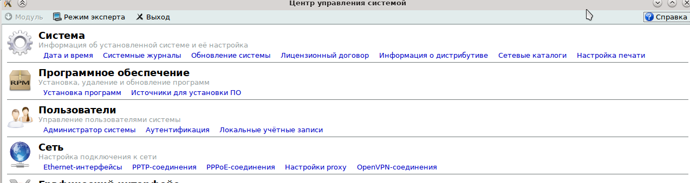
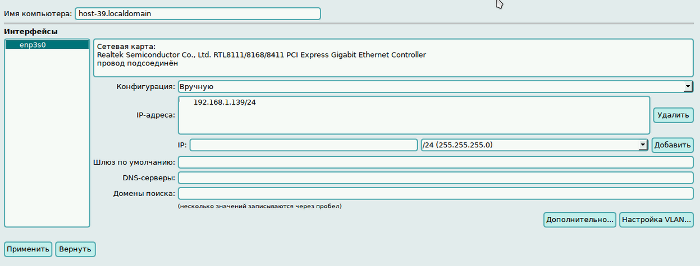
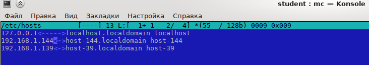
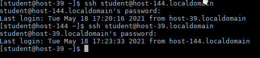
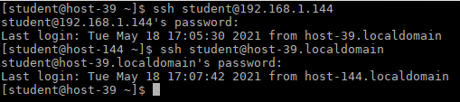

1. Для выполнения лабораторной работы необходимы 2 пк, пункты 1-3 выполнялись на 2 машинах.
Входим в настройки, центр управление системой.Вводим запрашиваемый пароль root'a. Выбираем Ethernet-интерфейсы.

2. Выбираем конфигурацию "Вручную" и добавляем IP. Запоминаем имя компьютера. После этого необходимо перезагрузить ПК.

3. После загрузки ПК переходим в терминал. С помощью команды su- заходим в root. Находясь в root'e вводим mc. В mc, в папке etc, находится файл hosts. Его нам необходимо отредактировать.

Должны присутствовать IP адрес,краткое и полное доменное имя как компьютера, на котором находимся, так и компьютера, с которым необходимо настроить сеть.
Сохраняем изменения. Не отсоединяем жесткие ссылки.
4. Необходимо проверить корректность настройки сети, для этого выходим из root’а и подключимся с одного пк к другому и проведем обратное подключение тремя способами:
1. Вход по краткому доменному имени вводом команды ssh student@host-144, вводим пароль, подключаемся обратно командой ssh student@host-39.
2. Вход по полному доменному имени:

3. Вход по ip-адресу:
